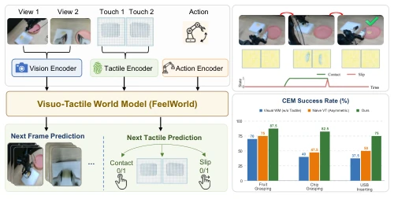
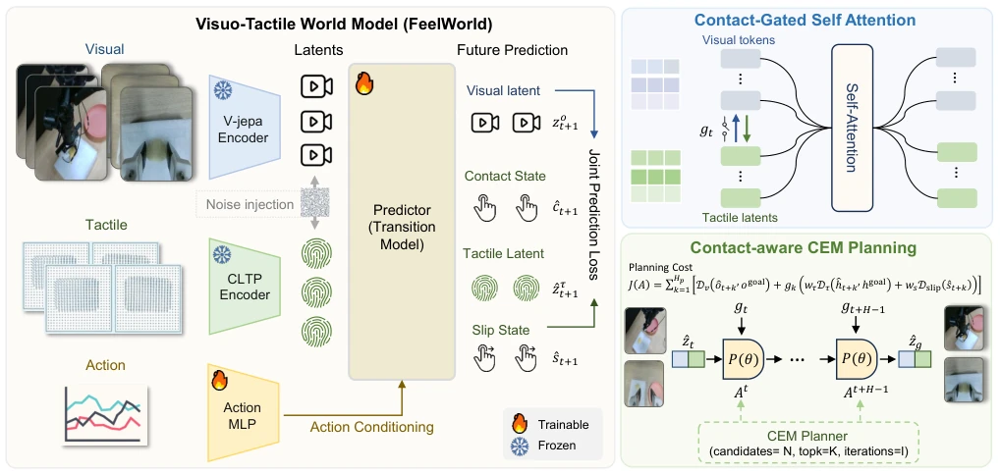
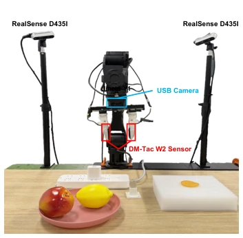
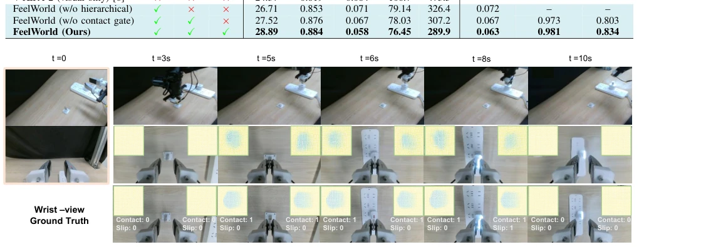
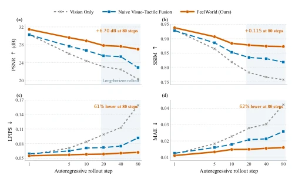
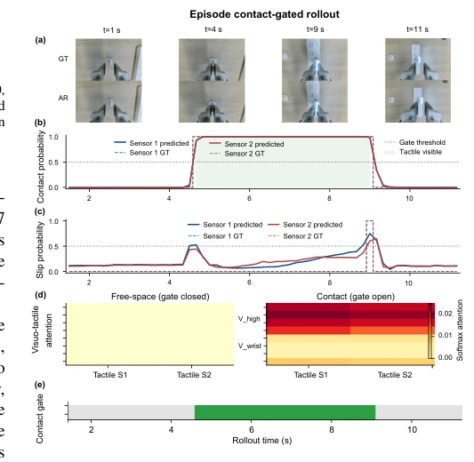
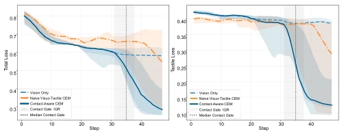

This paper equips world models with 'tactile nerves' without allowing tactile input to dictate blindly. The core of FeelWorld lies in 'conditional handling': when not in contact, vision operates independently; when contact occurs, tactile input intervenes. This approach is clever, as a robot hand fumbling in free space generates significant noise. However, the CEM planner runs relatively slowly, posing challenges for real-time control. Although the success rate is high, the computational cost remains substantial, leaving a gap before true high-frequency control is achievable. Overall, this is a promising attempt to 'structure' the physical meaning of tactile feedback, significantly outperforming naive methods that treat tactile data as pixel reconstruction, though one should not expect it to run directly on a 1kHz controller. It addresses the issue of tactile noise interfering with vision, but long-horizon planning still relies on sampling with high computational overhead, making it suitable for offline or low-frequency tasks.
Existing visual world models (e.g., Dreamer [3], [4] or V-JEPA 2 [6]) excel at appearance prediction but often fail to perceive contact forces or micro-deformations in contact-rich tasks [1], [2]. Previous tactile world models [7]-[10] introduced touch but often treated it as a single target, neglecting that tactile signals are essentially noise during free-space motion [10]. This results in insufficient physical consistency in contact prediction, where imagined futures may appear reasonable yet be physically erroneous. This research aims to address how tactile information is layered and selectively fused, preventing irrelevant tactile signals from interfering with visual prediction while leveraging touch to enhance physical reasoning during contact phases. Crucially, handling the asymmetry of tactile signals (which are meaningful only during contact) is key.
The overall process involves encoding visual and tactile observations and predicting the future through a shared dynamic model. First, tactile input is decomposed into three levels: contact state (binary), 3D tactile latent variables (force/deformation), and sliding state (stability). The model utilizes a pre-trained FG-CLTP [26] to encode tactile point clouds. The core innovation is Contact-Gated Asymmetric Attention: tactile tokens always attend to visual tokens to acquire global context, whereas whether visual tokens attend to tactile tokens is determined by the contact gate $g_t$. If not in contact, the vision path remains pure; if in contact, tactile features are fused. Training utilizes teacher forcing, autoregressive rollout, and context noise injection to enhance long-horizon robustness. The planning phase employs Contact-Aware CEM, where the cost function activates the tactile term only after predicted contact, avoiding optimization of unreachable goals in free space. Loss functions comprise visual L1, tactile L1, contact BCE, and sliding Focal Loss.

Fig. 1. Overview of FeelWorld. Left: multi-view visual observations, 3D tactile point clouds, and robot actions are encoded and fused to jointly predict future visual observations and hierarchical tactile states, including contact, 3D tactile latents, and slip. Right: contact-aware CEM planning consistently outperforms vision-only and naive visuo-tactile baselines across all tasks.

Fig. 2. Architecture of FeelWorld. Visual observations, tactile observations, and actions are encoded into latent tokens. Hierarchical tactile modeling decomposes touch into explicitly supervised contact states, 3D tactile latents, and slip states. Contact-gated asymmetric attention preserves visual prediction before contact and enables joint visuo-tactile prediction during contact. Autoregressive rollout training with context noise injection improves long-horizon robustness.
Experiments were conducted on the Imeta-Y1 robot involving chip grasping, fruit grasping, and USB insertion tasks. Baselines include Vision-only (V-JEPA 2 [6]) and Naive Visuo-Tactile. Metrics encompass visual prediction quality (LPIPS, PSNR, SSIM), tactile state prediction (F1), and planning success rate. Results indicate that FeelWorld achieves an LPIPS 61% lower than the vision baseline over an 80-step autoregressive rollout, with contact and sliding prediction F1 scores reaching 98.1% and 83.4%, respectively. The planning success rate averages 81.7%, significantly outperforming the vision baseline (32.5pp improvement). Ablation studies demonstrate that contact gating and hierarchical modeling are critical for noise suppression and enhancing long-horizon stability. All tasks involve zero-shot planning without specific policy fine-tuning.

Fig. 3. Robot platform. The Imeta-Y1 robot is equipped with three RGB cameras and DM tactile sensors. FeelWorld uses the left external camera to observe the global state and the wrist-mounted camera to provide local observations. The DM tactile sensor captures 3D tactile point clouds and contact states.

Fig. 4. Qualitative visualizations of FeelWorld. The model predicts future visual observations together with three tactile states: contact state, 3D tactile latent, and slip state. These tactile states change according to the interaction context and robot action.

Fig. 5. Long-horizon autoregressive visual prediction. At step 80, FeelWorld improves PSNR and SSIM over Vision Only by 6.70 dB and 0.115, while reducing LPIPS and MAE by 61% and 62%. The shaded region marks the long-horizon regime.

Fig. 6. Visualization of contact-gated prediction during a USB insertion episode. (a) Multi-stage visual rollout. (b) Ground-truth and predicted contact states. (c) Ground-truth and predicted slip states. (d) Gated visuo- tactile cross-attention for the external and wrist camera views. (e) Hard contact-gate activation over time.

Fig. 7. CEM planning curves over a 50-step execution. The plots show total loss (left) and tactile loss (right). At each replanning cycle, CEM optimizes a 6-step imagined horizon and executes the first two actions. The dotted line and gray band mark the median and interquartile range of contact-gate activation.